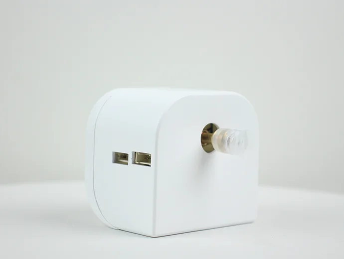
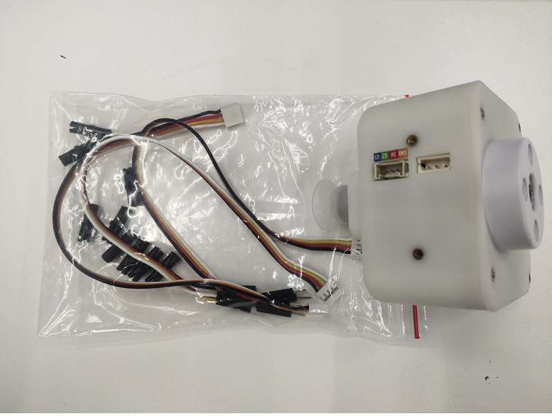
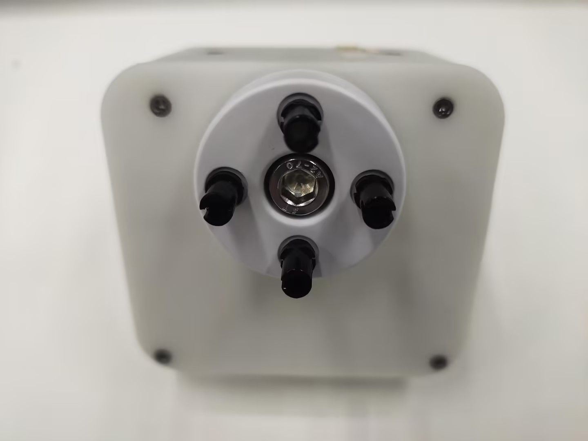
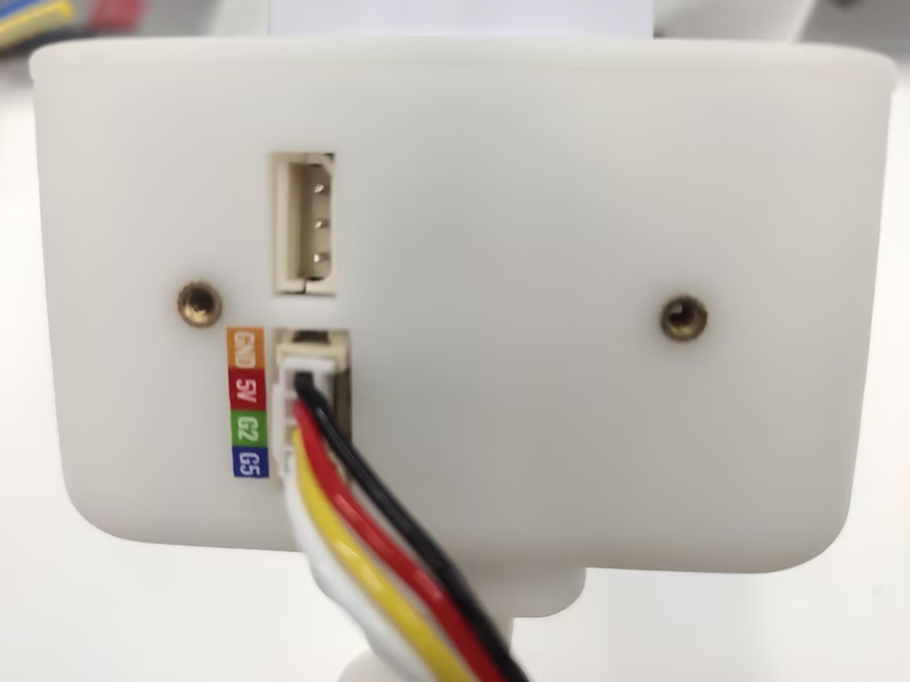
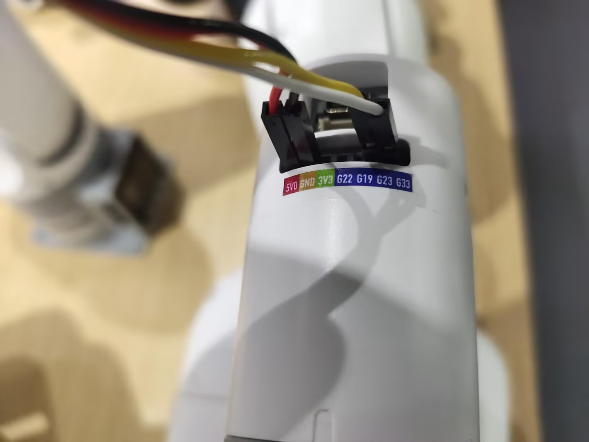

Integrated suction pump
Applicable models: myCobot 280, myPalletizer 260, mechArm 270

Specifications
| Name | myCobot integrated suction pump |
|---|---|
| Model | myCobot integrated suction pump |
| Material | ABS injection molding |
| Color | White |
| Size | Diameter 20mm |
| Number of suction cups | 1 |
| Suction weight | 50g |
| Power source equipment | Suction pump box |
| Service life | One year |
| Fixing method | Lego connector |
| Control interface | IO control |
| Use environment requirements | Normal temperature and pressure |
| Applicable equipment | ER myCobot 280 Series, ER myPalletizer 260 Series, ER mechArm 270 Series, ER myBuddy 280 Series |
Suction pump: Used for adsorbing objects
Introduction
Suction pump, that is, vacuum adsorption pump, has one suction nozzle and one exhaust nozzle. It has the advantages of simple structure, small size, easy use, low noise, and good self-priming ability. By controlling the suction pump kit as the end effector of the robot arm, the function of adsorbing objects is performed.
Suction pump accessories: power cord x1, DuPont line x10, one-input and two-output connection line x1, Lego technology parts x several
Working principle
When sucking objects: the air pump starts to suck air and adsorb objects and then stops, and there will be no air leakage in a short time.
When putting down objects: the electronic valve starts, the air release valve opens, and air enters the vacuum suction cup to separate from the sucked objects.
Applicable objects
- Paper/plastic sheets
- Flat and smooth objects
- Cards, etc.
Installation and use
Check whether the accessories package is complete: Lego connectors, Dupont wires, double-head suction pump

Suction pump installation
Structural installation:
Insert the Lego connector into the reserved socket on the suction pump:

- Align the suction pump with the connector plugged in with the socket at the end of the robot arm and insert it:
>

- Electrical connection:
Select the male-female DuPont wire, and insert the female end into the socket marked with pins on the suction pump box:
Male-female DuPont wire:
Note the correspondence between the DuPont wire colors and pins in the figure: 
Insert the male end into the robot base pin according to the given correspondence:
 The left side is the suction pump pin, and the right side is the robot arm pin GND -> GND 5V -> 5V G2 -> 21 G5 -> 20
Programming development:
280-M5 Version:
from pymycobot.mycobot import MyCobot
import time
# Initialize a MyCobot object
mc = MyCobot("COM3", 115200)
# Turn on the suction pump
def pump_on():
# Open the solenoid valve
mc.set_basic_output(5, 0)
time.sleep(0.05)
# Stop the suction pump
def pump_off():
# Close the solenoid valve
mc.set_basic_output(5, 1)
time.sleep(0.05)
# The exhaust valve starts working
mc.set_basic_output(2, 0)
time.sleep(1)
mc.set_basic_output(2, 1)
time.sleep(0.05)
pump_off()
time.sleep(3)
pump_on()
time.sleep(3)
pump_off()
time.sleep(3)
GPIO.cleanup() # Release pin channel
- 280-Pi version:
from pymycobot.mycobot import MyCobot
from pymycobot import PI_PORT, PI_BAUD # When using the Raspberry Pi version of mycobot, you can reference these two variables to initialize MyCobot
import time
import RPi.GPIO as GPIO
# Initialize a MyCobot object
mc = MyCobot(PI_PORT, PI_BAUD)
# Initialization
GPIO.setmode(GPIO.BCM)
# Pins 20/21 control the solenoid valve and the bleed valve respectively
GPIO.setup(20, GPIO.OUT)
GPIO.setup(21, GPIO.OUT)
# Turn on the suction pump
def pump_on():
# Open the solenoid valve
GPIO.output(20,0)
# Stop the suction pump
def pump_off():
# Close the solenoid valve
GPIO.output(20,1)
time.sleep(0.05)
# Open the exhaust valve
GPIO.output(21,0)
time.sleep(1)
GPIO.output(21,1)
time.sleep(0.05)
pump_off()
time.sleep(3)
pump_on()
time.sleep(3)
pump_off()
time.sleep(3)
GPIO.cleanup() # Release the pin channel